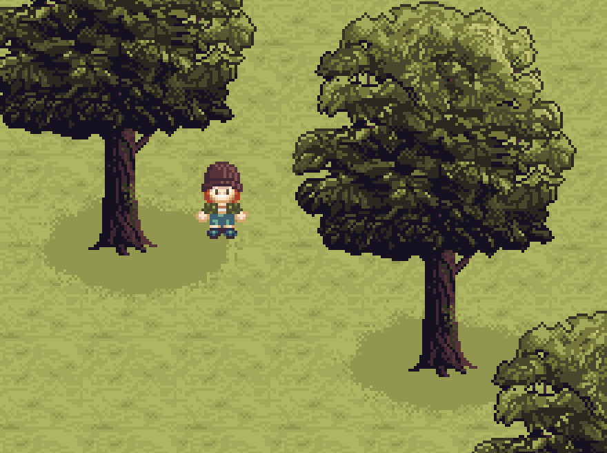
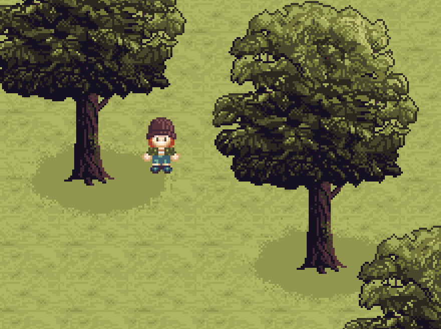
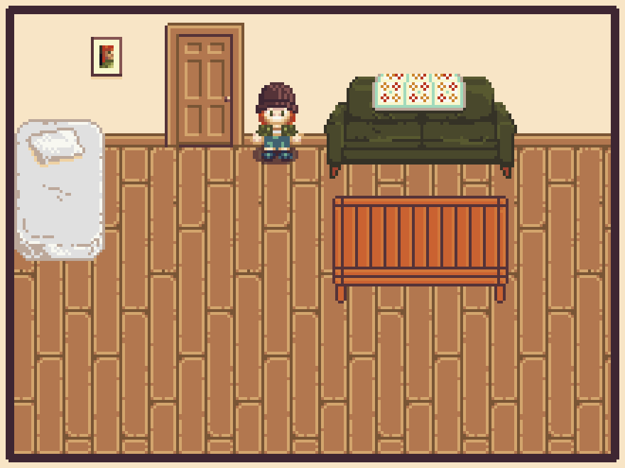
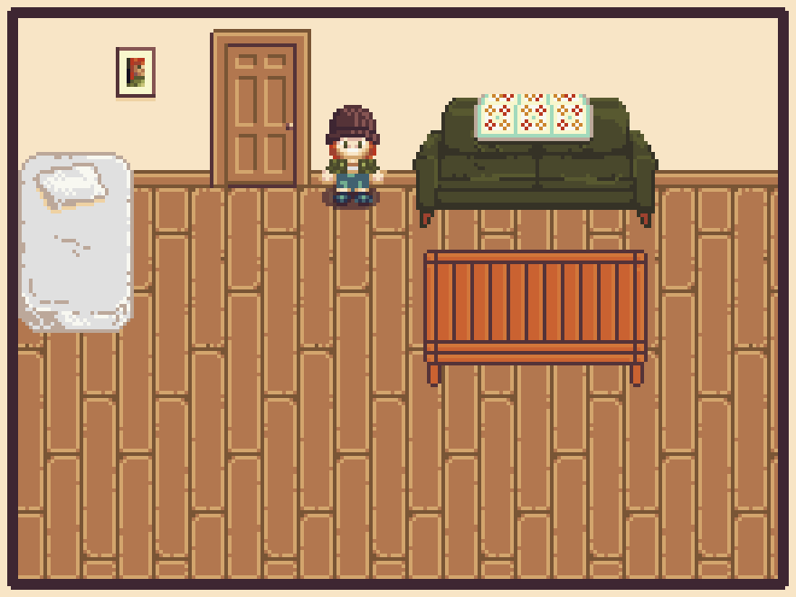

What books have I designed? FIXIMG
Here's a sample of some of the covers I've been proud to work on over the last few years.


Hi! I'm Louis Roe, a graphic designer / visual artist / craft dabbler based in Boston, Massachusetts.
Currently I work as a senior designer at Beacon Press, where I create covers for nonfiction books on topics like history, identity, and activism.
Here's a sample of some of the covers I've been proud to work on over the last few years.
Most of my freelance work has been for local bands and show promoters, i.e. gig posters, album art, and band tees.
Click title of piece to show images
Fenn Macon/Moonish Brute Split Digital Cover
A collaboration with Louis Roe for our split tape, I designed the background and Louis drew the little guys

Three Variations on a Tartan: An Exploration of Glitch Aesthetics
Featured in the 2014 Fitchburg Art Museum 79th Regional Exhibition of Art & Craft


Self Portrait
Created using Pixel Drifter

Other Work
Created using Pixel Drifter and various notepad based glitch techniques


As a serial hobbyist, there's little I love more than picking up a new craft to obsess over. Some of my favorites have included ceramics, embroidery, rugmaking, quilting, knitting and crochet.
Tech-y stuff. Lately I've been really interested in developing my computer skills, so I've been studying data analytics tools like Excel, Tableau, R, SQL, and Python.
Languages. I'm brushing up on my conversational Spanish and just starting out with Mandarin Chinese.
Oh, right! I started making some pixel art for a murder mystery dating game my roommate and I are dreaming up.
 

 

Feel free to email me at lojoroe@gmail.com or reach out on Facebook, I'd be happy to hear from you.